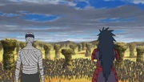
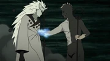
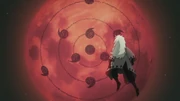
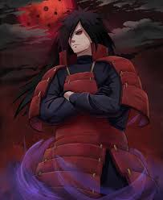

Madara tests his body by tearing through the Fourth Division, thinning its numbers.

After sealing the Ten-Tails into his body, Madara had immediately gained complete control over the beast

Madara approached the moon and awakened a Rinne Sharingan on his forehead

summons the Demonic Statue from Obito's body and uses Limbo: Border Jail to repel the nine beasts.